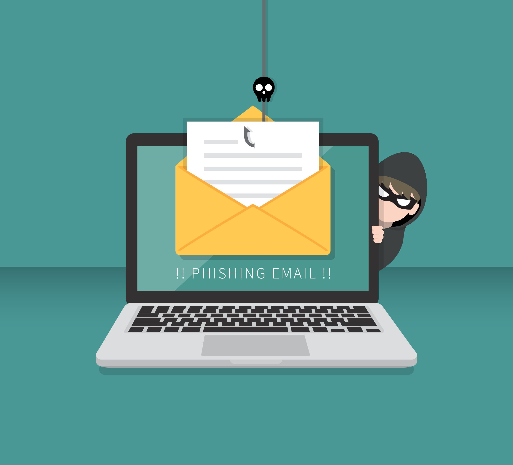

What is Phishing?

Phishing is a cybercrime where attackers pose as legitimate institutions to trick you into revealing sensitive information. This can include your passwords, credit card numbers, or other personal data. These attacks often come in the form of fake emails, texts, or websites that seem genuine but are designed to steal your information.
How Phishing Works
1. The Bait: Phishers send out emails or messages that appear to be from reputable sources like your bank, a popular online store, or even your boss. These messages often create a sense of urgency, such as warning you about an account breach or a missed payment.
2. The Hook: The message will typically contain a link or an attachment. Clicking on the link may direct you to a fake website that looks just like the real thing, prompting you to enter your login details or other personal information.
3. The Catch: Once you enter your information, it's sent directly to the attackers, who can then use it to steal your identity, drain your bank accounts, or carry out other malicious activities.
Types of Phishing Attacks
1. Phishing SMS (Smishing)
SMiShing, also known as SMS Phishing, can be classified as a type of social engineering attack. Unlike email phishing, which uses emails to carry out attacks, SMiShing is done through text messages. A typical example of SMiShing is when a threat actor impersonates a legitimate entity such as your organization, an IT service/security admin, a bank, a government agency, an e-commerce site, a package delivery service, etc., to trick you into divulging your username/passwords or other sensitive information.
2. Email phishing
Phishing attacks, often delivered via email spam, attempt to trick individuals into giving away sensitive information and/or login credentials. Most attacks are "bulk attacks" that are not targeted and are instead sent in bulk to a wide audience. The goal of the attacker can vary, with common targets including financial institutions, email and cloud productivity providers, and streaming services. The stolen information or access may be used to steal money, install malware, or spear phish others within the target organization. Compromised streaming service accounts may also be sold on darknet markets. This type of social engineering attack can involve sending fraud emails or messages that appear to be from a trusted source, such as a bank or government agency. These messages typically redirect to a fake login page where the user is prompted to enter their login credentials.
3. Spear Phishing
Spear phishing is a targeted phishing attack that uses personalized emails to trick a specific individual or organization into believing they are legitimate. It often utilizes personal information about the target to increase the chances of success. These attacks often target executives or those in financial departments with access to sensitive financial data and services. Accountancy and audit firms are particularly vulnerable to spear phishing due to the value of the information their employees have access to.
4. Clone Phishing
Clone phishing involves creating a nearly identical copy of a legitimate email that you have previously received, but with a malicious twist. Attackers take advantage of the trust you have in the original sender by replicating the email’s content, including logos, formatting, and attachments. However, they replace the legitimate links or attachments with malicious ones. Since the email looks familiar and expected, you are more likely to engage with it, unknowingly downloading malware or providing sensitive information to the attacker.
5. Vishing (Voice Phising)
Vishing, or voice phishing, involves attackers using phone calls or voice messages to impersonate trusted entities, such as banks, government agencies, or tech support services. The attackers may claim there is an urgent issue with your account or that you need to verify your identity. They might use sophisticated tactics, such as caller ID spoofing, to make the call appear legitimate. Their goal is to create a sense of urgency, pressuring you into providing sensitive information like your social security number, account details, or credit card information over the phone.
How to Protect from Phishing
Check the Sender's Email Address: Phishing emails often come from addresses that are similar to, but not exactly the same as, legitimate ones. Look for minor misspellings or extra characters.
Use SmartGuard to identify Phishing Links: Whenever you come across a suspicious link, use SmartGuard to check whether the website is safe or not.
Install SmartGuard Extension to get on-the-go Phishing Detection: Install the SmartGuard extension to automatically detect and block phishing attempts. Our advanced algorithms can identify even the most sophisticated phishing schemes.
Be Wary of Urgent or Threatening Language: Phishers often try to create a sense of urgency to trick you into acting without thinking. Be skeptical of messages that claim you must act immediately.
Watch for Typos and Poor Grammar: Professional companies rarely send out communications with spelling or grammatical errors. These mistakes are often signs of a phishing attempt.
Stay Informed, Stay Safe
Phishing attacks can be highly deceptive, but with the right tools and knowledge, you can protect yourself. By using SmartGuard, you’re not just relying on your instincts; you’re empowering yourself with cutting-edge technology that detects phishing attempts before they reach you. Stay informed, stay safe, and let SmartGuard keep your online experience secure.